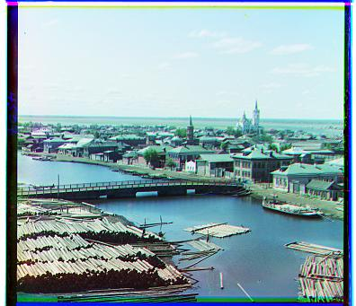

Aligning Images with Exhaustive Search
Using an exhaustive search given a window \([-z, z]\), the algorithm loops over the \(x\) and \(y\) axis to determine a shift \((dx, dy)\) such that \(dx, dy\) are in \([-z, z]\). The ideal shift is chosen by a given metric, two of which I used for the project are sum of squared differences and the zero-normalized correlation coefficient. The ZNCC metric is useful for varying brightnesses in the channels, as the images are first normalized before maximizing their dot product. The exhaustive search is effective for small images such as the jpg files.
